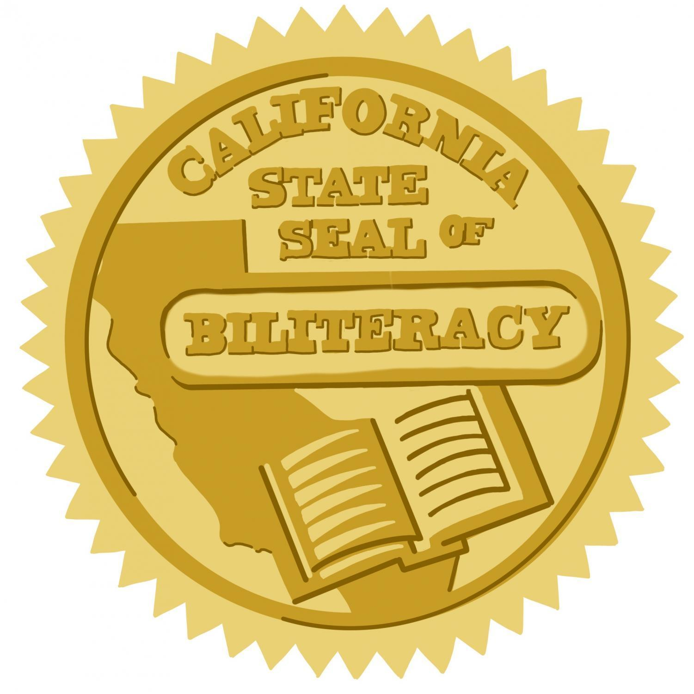
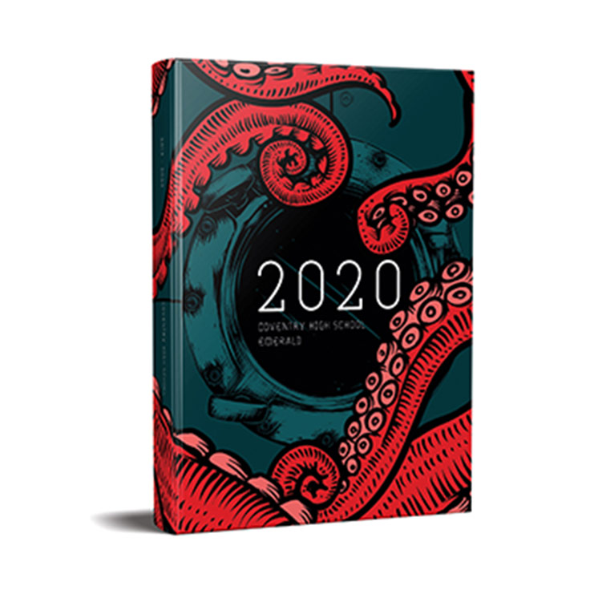
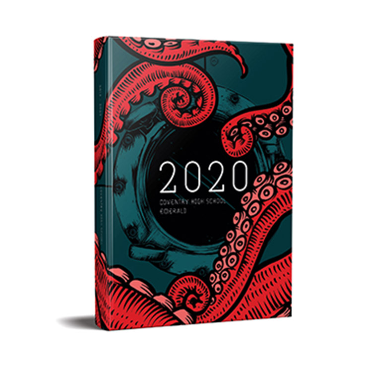

Leyna Nguyen
My name is Leyna Nguyen and I am currently a second year undergraduate student at the University of California, Riverside as a psychology major. As of right now, I am just focusing on completing my GE’s but hope to pursue possible internships to build my growth in the psychology field.
One of the reasons why I had an interest towards this particular field is because I was always intrigued by how the human brain works. Although I have only prior knowledge from my previous lower division courses so far, I hope to continue this pathway to learn more how our minds act certain ways and how it is a key factor to our daily lifestyle. My interest towards psychology was first influenced when I took human anatomy. This course introduced me to a unit of how the brain functions and the parts that support it. After experiencing my first dissection of a sheep brain, it made me become more intrigued with how the human mind works, leading me to the subject of psychology. Out of curiosity I became more exposed to psychology which goes in depth about the study of human thought and behavior. I find it interesting how the human brain is the center for everything we do and it is something that I want to expand further later on in the future. My interest in this particular subject led me on a journey of becoming a mental health therapist or possibly even a social worker. I hear many different stories ranging from relationship problems to anxiety from various different people. I was always intrigued into what they have to say and sometimes gives suggestions on what they should do to overcome their challenges. I want to offer a helping hand to others because after going through my own traumatic experiences, I want to help heal those who are facing struggles in their life. I want to make those who feel discouraged recover and heal from their experiences. I always wanted to help others as I grew up hearing and comforting those around me and would hope to someday continue my interests as an actual professional career. It is something that I encounter during my daily life so it was another reason that encouraged me to pursue this pathway.
I hope to also gain some training and be able to professionally help others on finding solutions.
I have furthered my interest in this field by participating in an informational interview with a mental health counselor. She discussed the process of becoming a counselor, and informed me about the different types of mental counselors that I can possibly become. She also explained to me what a typical day in a counseling office would look like so I can picture myself being in one. My plans to further my pathway in becoming a mental health counselor is to get my bachelors degree and later pursue a master’s so I can be fully licensed and to have better opportunities to practice my skills.
Experience
Academic Club Officer
• Held an officer position as Secretary
• Was in charge of fundraisers
• Promoted the club by recriuting more members
Volunteering
• Volunteered at various events
• Some include: the disabled, cultural festivals, and food banks
Yearbook
• Captured moments throughout the entire school year
• Contributed in designing many pages of high school yearbook
• Helped in promting and increasing yearbook sales
• Made sure every event, organization, activities were included throughout the school year
Education
University of California, Riverside
Magnolia High School
Portfolio



